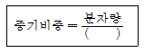
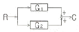
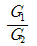
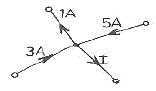
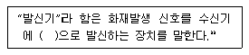
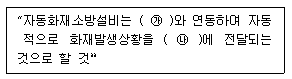

소방설비산업기사(전기) (2007-09-02 기출문제)
1과목: 소방원론
1. 다음 중 바닥부분의 내화구조 기준으로 틀린 것은?
- 철근 콘크리트조로서 두께가 5cm 이상인 것
- 철골철근 콘크리트조로서 두께가 10cm 이상인 것
- 철재로 보강된 콘크리트 블록조ㆍ벽돌조 또는 석도로서 철제에 덮은 콘크리트블록 등의 두께가 5cm 이상인 것
- 철재의 양면을 두께 5cm 이상의 철망모르타르 또는 콘크리트로 덮은 것
(정답률: 63%)

2. 소화(消火)를 하기 위한 방법으로 틀린 것은?
- 산소의 농도를 낮추어 준다.
- 가연성 물질을 냉각시킨다.
- 기열원을 계속 공급한다.
- 연쇄반응을 억제한다.
(정답률: 97%)
3. 내화구조 기준에서 외벽 중 비내력벽의 경우에는 철근콘크리트조의 두께가 몇cm 이상인 것인가?
- 5
- 6
- 7
- 8
(정답률: 44%)
4. 코크스 또는 금속부의 연소를 무슨 연소라고 하는가?
- 분해연소
- 증발연소
- 자기연소
- 표면연소
(정답률: 72%)
5. 다음 피난대책의 조건 중 틀린 것은?
- 피난로는 간단명료할 것
- 피난설비는 반드시 이동식 설비일 것
- 막다른 복도가 없도록 계획할 것
- 피난설비는 Fool-Proof와 Fail Safe의 원칙을 중시할 것
(정답률: 94%)
6. 증기비중을 구하는 식은 다음과 같다. 분모의 ( ) 속에 가장 알맞은 값은?

- 15
- 21
- 22.4
- 29
(정답률: 76%)
7. 다음 화재종류 중 A급 화재에 속하지 않는 것은?
- 목재 화재
- 섬유류 화재
- 종이류 화재
- 전기 화재
(정답률: 92%)
8. 건축물의 내부에 설치하는 피난계단의 구조는 내화구조로 하고, 어디까지 직접 연결되도록 하는가?
- 피난층 또는옥상
- 피난층 또는 지상
- 개구부 또는 옥상
- 개구부 또는 지하
(정답률: 85%)
9. 제4류 위험물의 제조소에서 게시판에 주의사항을 표기하려고 할 때 가장 적당한 것은?
- 물기주의
- 화기주의
- 화기엄금
- 충격주의
(정답률: 80%)
10. 자연발화를 방지하는 일반적인 방법으로 옳지 않은 것은?
- 통풍을 잘 시킨다.
- 저장실의 온도를 낮춘다.
- 촉매외의 접촉을 피한다.
- 습기를 많이 제공한다.
(정답률: 89%)
11. 물의 증발잠열은 몇 kcal/kg 인가?
- 439
- 539
- 639
- 739
(정답률: 93%)
12. 다음 중 인화점에 가장 낮은 물질은?
- 등유
- 아세톤
- 경유
- 아세트산
(정답률: 68%)
13. 점화원이 없이 가연물에 가열은 열에 의하여 스스로 연소가 시작되는 최저온도를 무엇이라 하는가?
- 발화점
- 인화점
- 임계점
- 승화점
(정답률: 64%)
14. 다음 물질 중 금수성 물질에 해당하는 것은?(오류 신고가 접수된 문제입니다. 반드시 정답과 해설을 확인하시기 바랍니다.)
- 목탄
- 종이
- 유황
- TNT
(정답률: 55%)
15. 다음 물질 중 금수성 물질에 해당하는 것은?
- 유황
- 탄화칼슘
- 황린
- 이황화탄소
(정답률: 65%)
16. 다음 중 제4류 위험물의 특수인화물에 해당되는 것은?
- 휘발유
- 금속칼륨
- 디에틸에테르
- 과산화수소
(정답률: 75%)
17. 산소의 공급이 원활하지 못한 화재실에 급격히 산소가 공급이 될 경우 순간적으로 연소하여 화재가 폭풍을 동반하여 실외로 분출하는 현상은?
- 후레쉬 오버
- 보일 오버
- 백 드래프트
- 슬롭 오버
(정답률: 78%)
18. 물의 증발잠열을 이용한 주요 소화작용에 해당하는 것은?
- 희석작용
- 열 억제작용
- 냉각작용
- 질식작용
(정답률: 89%)
19. 다음 물질 중 연소 범위가 가장 넓은 것은?
- 아세틸렌
- 메탄
- 프로판
- 에탄
(정답률: 77%)
20. 다음 중 연소의 3 요소를 옳게 나열한 것은?
- 가연물, 산소, 점화원
- 가연물, 산소, 연쇄반응
- 고체가연물, 기체가연물, 액체가연물
- 전도, 대류, 복사
(정답률: 95%)
2과목: 소방전기회로
21. v=282 sin 314t [V]인 정현파 주파수는 약 몇 [Hz] 인가?
- 50
- 55
- 60
- 65
(정답률: 50%)
22. 직류전압계와 전류계를 사용하여 부하전압과 전류를 측정하고자 한다. 연결 방법으로 옳은 것은?
- 전압계는 부하와 직렬, 전류계는 부하와 병렬
- 전압계는 부하와 병렬, 전류계는 부하와 직렬
- 전압계, 전류계 모두 부하와 병렬
- 전압계, 전류계 모두 부하와 직렬
(정답률: 81%)
23. 어느 전동기가 회전하고 있을 때 전압 및 전류의 실효값이 각각 50V, 3A이고 역률이 0.8이라면 무효전력은 몇 [Var]인가?
- 70
- 80
- 90
- 100
(정답률: 43%)
24. 전압 1.5V 내부저항 0.2Ω의 전지 5개를 직렬로 접속하면 전전압은 몇 [V]인가?
- 1.5
- 3.0
- 4.5
- 7.5
(정답률: 48%)
25. 그림의블 록선도에서 전달함수 C/R는?


- G1+G2
- G1ㆍG2
- G1-G2
(정답률: 64%)
26. 동력용 전원으로 사용하는 상용 3상 교류전원의 상간 위상차는 몇 도인가?
- 60
- 120
- 180
- 240
(정답률: 47%)
27. 환상철심에 코일을 감고 이 코일에 5A의 전류를 흘리면 2000AT의 기자력이 생긴다. 코일의 권수는 몇 회인가?
- 200
- 300
- 400
- 500
(정답률: 74%)
28. 저항 4Ω과 유도리액턴스 3Ω이 병렬로 접속된 회로의 임피던스는 몇 [Ω] 인가?
- 1.2
- 2.4
- 3.6
- 5.0
(정답률: 40%)
29. 바리스터의 주된 용도는?
- 온도 보상
- 출력전류 조절
- 전압 증폭
- 서지전압에 대한 회로보호
(정답률: 76%)
30. 트랜지스터의 전극 명칭이 아닌 것은?
- 이미터
- 베이스
- 애노드
- 컬렉터
(정답률: 68%)
31. 회전운동계의 각속도를 전기적인 요소호 변환하면?
- 정전용량
- 컨덕턴스
- 전류
- 인덕턴스
(정답률: 48%)
32. 동기 발전기를 졍렬 운전하고자 하는 경우 같지 않아도 되는 것은?
- 기전력의 주파수
- 기전력의 크기
- 기전력의 위상
- 발전기의 용량
(정답률: 76%)
33. 코일을 지나가는 자속이 변화하면 코일에 기전력이 발생한다. 이 때 유기되는 기전력의 방향을 감정하는 법칙은?
- 렌쯔의 법칙
- 플레밍의 왼손법칙
- 키르히호프의 법칙
- 플레밍의 오른손법칙
(정답률: 40%)
34. 그림에서 전류 I는 몇 [A] 인가?

- 6
- 7
- 8
- 11
(정답률: 82%)
35. 맥동률이 가장 적은 정류방식은?
- 단상 반파식
- 단상 전파식
- 3상 반파식
- 3상 전파식
(정답률: 78%)
36. 논리식 A(A+B)를 간단히 하면?
- A
- B
- AB
- A+B
(정답률: 72%)
37. 서보기구를 이용한 제어에 해당하는 것은?
- 추적용 레이더 장치
- 정전압 장치
- 전기로 온도제어 장치
- 발전기의 조속기
(정답률: 58%)
38. R-L 직렬회오에서 100V, 60Hz의 전압을 가했더니 위상이 30도 뒤진 10A의 전류기 흘렸다. 이 때 리액턴스는 몇 [Ω]인가?
- 0.5
- 1.0
- 5.0
- 17.3
(정답률: 29%)
39. 지시전기계기의 일반적인 구성요소가 아닌 것은?
- 가열장치
- 구동장치
- 제어장치
- 제동장치
(정답률: 73%)
40. 일정 전압의 직류전원에 저항을 접속하여 전류를 흘릴 때 저항값을 10% 감소시키면 전류는 어떻게 되겠는가?
- 8% 증가한다.
- 11% 증가한다.
- 8% 감소한다.
- 11% 감소한다.
(정답률: 60%)
3과목: 소방관계법규
41. 일반공사감리 대상의 경우 감리현장 연면적의 총합계가 10만 m2 이하일 때 1인의 책임감리원이 담장하는 소방공사감리현장은 몇 개 이하인가?
- 2개
- 3개
- 4개
- 5개
(정답률: 52%)
42. 제4류 위험물로서 제1석유류인 수용성 액체의 지정수량은 몇 리터인가?
- 100
- 200
- 300
- 400
(정답률: 46%)
43. 다음 중 소방활동 등에 관한 사항으로 옳지 않은 것은?
- 화재현장을 발견한 사람은 그 현장의 상황을 소방서ㆍ소방본부 또는 관계행정기관에 지체 없이 알려야 한다.
- 소방대는 화재현장에 신속하게 출동하기 위하여 긴급한 때에는 일반적인 통행에 쓰이지 아니하는 도로ㆍ빈터 또는 물위로 통행할 수 있다.
- 모든 차와 사람은 소방자동차가 화재진압 및 구조ㆍ구급 활동을 위하여 출동을 하는 때에는 이를 방해하여서는 아니 된다.
- 화재가 발생한 때에는 그 소방대상물의 관계인은 급히 대피하여 화재의 연소상태를 살펴야 한다.
(정답률: 74%)
44. 관계인이 예방규정을 정하여야 하는 제조소 등의 기준으로 올바른 것은?
- 지정수량의 20배 이상의 위험물을 취급하는 제조소
- 지정수량의 150배 이상의 위험물을 저장하는 옥내저장소
- 지정수량의 250배 이상의 위험물을 저장하는 옥외저장소
- 지정수량의 350배 이상의 위험물을 저장하는 옥외탱크저장소
(정답률: 69%)
45. 소방시성관리업의 등록기준에 미달하게 된 때 1차 행정처분기준은?
- 경고(시정명령)
- 영업정지 3월
- 영업정지 6월
- 등록취소
(정답률: 57%)
46. 다음 소방시설 중 피난설비에 속하는 것으로 알맞은 것은?
- 제연설비ㆍ휴대용비상조명등
- 자동화재속보설비ㆍ유도등
- 비상방송설비ㆍ비상벨설비
- 비상조명등ㆍ유도등
(정답률: 70%)
47. 소방용수시설로 급수탑을 설치하고자 할 때 개폐밸브의 설치 높이는?
- 지상에서 1.0m 이상 1.5m 이하
- 지상에서 1.5m 이상 1.7m 이하
- 지상에서 1.5m 이상 2.0m 이하
- 지상에서 1.0m 이상 2.5m 이하
(정답률: 63%)
48. 특정소방대상물로서 숙박시설에 해당되지 않는 것은?
- 호텔
- 모텔
- 휴양콘도미니엄
- 오피스텔
(정답률: 76%)
49. 소방시설 설치유지 및 안전관리에 관한 법률상 특정소방대상물의 관계인이 피난시설 및 방화시설을 폐쇄한 경우 이의 필요한 조치를 명할 수 있는 자는?
- 행정자치부장관
- 건설교통부장관
- 관할 시ㆍ군ㆍ구청장
- 소방본부장 또는 소방서장
(정답률: 79%)
50. 화재경계지구의 지정대상지역으로 옳지 않은 것은?
- 시장지역
- 공장ㆍ창고가 밀집한 지역
- 소방출동로가 좁은 지역
- 목조건물이 밀집한 지역
(정답률: 71%)
51. 소방본부장 또는 소방서장은 소방업무를 보조하게 하기 위하여 의용소방대를 둔다. 다음 중 해당하지 않는 지역은?
- 광역시
- 읍
- 근
- 면
(정답률: 70%)
52. 다음 중 시ㆍ도지사가 방엽업자의 등록을 취소하거나 6월 이내의 기간을 정하여 이의 시정이나 영업정지를 명할 수 있는 것이 아닌 것은?
- 거짓 그 밖의 부정한 방법으로 등록을 한 때
- 정당한 사유 없이 계속하여 6개월간 휴업한 때
- 다른 자에게 등록증 또는 등록수첩을 빌려준 때
- 등록을 한 후 정당한 사유 없이 1년이 지나도록 영업을 개시하지 아니한 때
(정답률: 30%)
53. 소방기본법의 목적과 가장 거리가 먼 것은?
- 국민의 생명ㆍ신체 및 재산 보호
- 소방기술 진흥
- 화재를 예방ㆍ경계 또는 진압
- 공공의 안녕질서 유지와 복리증진
(정답률: 70%)
54. 소방기본법상 화재, 재난ㆍ재해 그 밖의 위급한 상황에서 발생한 응급환자를 응급처치 하거나 의료기관에 이송하기 위한 구급대의 운영, 편성권자가 아닌 것은?
- 소방본부장
- 소방서장
- 소방방재청장
- 보건복지부장관
(정답률: 72%)
55. 방화관리대상물의 관계인이 방화관리자를 선임한 때에는 선임한 날부터 며칠 이내에 관한 소방본부장 또는 소방서장에게 신고하여야 하는가?
- 7일
- 14일
- 21일
- 30일
(정답률: 74%)
56. 다음 중 국고보조 대상 소방활동장비의 종류로 거리가 먼 것은?
- 무정전전원장치
- 소방자동차
- 소방헬리콥터
- 소방정
(정답률: 79%)
57. 소방검사를 관계인의 승낙 없이 해가 뜨기 전이나 해가 진 뒤에도 할 수 있는 경우로 가장 알맞은 것은?
- 소방방재청장이 해당 소방대상물에 소방검사를 지시할 경우
- 소방방재청장이 우려가 뚜렷하여 긴급하게 검사할 필요가 있는 경우
- 소방대상물이 비공개 된 경우
- 소방대상물에서 직원 등이 근무하고 있지 않는 시간에 검사하는 경우
(정답률: 78%)
58. 소방대상물의 관계인에 대한 설명으로 적절하지 아니한 것은?
- 소방대상물의 소유자
- 소방대상물의 점유자
- 소방대상물을 검사중인 소방공무원
- 소방대상물의 관리자
(정답률: 82%)
59. 위험물을 취급하는 제조소에서 피뢰침의 설치는 지정수량의 몇 배 이상의 위험물을 취급하는 경우인가?
- 10배
- 20배
- 25배
- 30배
(정답률: 70%)
60. 다음 중 소방신호의 종류별 소방신호의 방법에 해당하지 않는 것은?
- 타종신호
- 싸이렌신호
- 게시판
- 스트로브신호
(정답률: 54%)
4과목: 소방전기시설의 구조 및 원리
61. 자동화재탐지설비의 수신기를 축적기능 등이 있는 것으로 설치하여야 하는 실내면적의 기준으로 알맞은 것은?
- 40m2 미만
- 50m2 미만
- 80m2 미만
- 100m2 미만
(정답률: 31%)
62. 비상경보설비의 화재안전기준상의 발신기에 대한 용어의 정의 이다. ( )에 알맞은 것은?

- 전기적
- 기계적
- 수동
- 자동
(정답률: 48%)
63. 객석내의 통로가 경사로 또는 수평로로 되어 있는 부분에 있어서 객석의 통로의 직선부분의 길이가 35cm 인 경우에 설치하여야 할 객석유도등의 개수는?
- 5개
- 7개
- 8개
- 9개
(정답률: 42%)
64. 공기관식 차동식분포형감지기 설치기준에 관한 설명으로 옳은 것은?
- 공기관은 도중에서 분기하지 아니하도록 할 것
- 공기관의 노출부분은 감지구역마다 15m 이상이 되도록 할 것
- 검출부는 바닥으로부터 0.8m 이상 1.8m 이하의 위치에 설치할 것
- 하나의 검출부분에 접속하는 공기관의 길이는 150m 이하로 할 것
(정답률: 55%)
65. 다음 중 휴대용비상조명등의 설치기준으로 적합하지 아니한 것은?
- 설치높이는 바닥으로부터 0.8m 이상 1.5m 이하의 높이에 설치
- 백화점ㆍ대형점ㆍ쇼핑센터는 보행거리 30m 이내마다 3개 이상 설치
- 영화상영관에는 보행거리 50m 이내마다 3개 이상 설치
- 지하상가 및 지하역사에는 보행거리 25m 이내 마다 3개 이상 설치
(정답률: 75%)
66. 지하 2층, 지상 7층인 소방대상물에 비상방송설비가 설치되어 있다. 만약 지상1층에서 발화한 때에는 어느 층에 우선적으로 경보를 발하여야 하는가/
- 발화층 및 최상층
- 발화층 및 직상층
- 발화층ㆍ그 직상층 및 최상층
- 발화층ㆍ그 직상층 및 지하층
(정답률: 70%)
67. 비상조명등의 조도는 그것이 설치된 장소의 각 부분의 바닥에서 및 [lx] 이상이 되도록 하여야 하는가?
- 0.5
- 1.0
- 2.0
- 3.0
(정답률: 62%)
68. 자동화재탐지설비의 경계구역 설정시 지하구의 경우 하나의 경계구역의 길이는 몇 [m] 이하로 하여야 하는가?
- 700
- 1000
- 1200
- 1500
(정답률: 66%)
69. 부착높이가 4m 미만이고 주요구조부를 내화구조로 한 소방대상물에 연기감지기 2종을 설치하려고 한다. 바닥면적 및 [m2]마다 1개 이상으로 할 수 있는가?
- 50
- 75
- 150
- 300
(정답률: 46%)
70. 무선통신보조설비의 누설동축케이블 및 공중선은 고압의 전로로부터 최소 및 [m] 이상 떨어진 위치에 설치하여야 하는가? (단, 당해 전로에 정전기 차폐장치를 유효하게 설치하지 않은 경우이다.)
- 0.5
- 1.0
- 1.5
- 2.0
(정답률: 69%)
71. 청각장애인용 시각경보장치의 설치높이는 바닥으로 볕 [m]의 장소에 설치하여야 하는가? 9단, 천장이 높이는 2m 이상인 경우이다.)
- 0.5m 이상 1.5m 이하
- 1.0m 이상 1.5m 이하
- 1.5m 이상 2.0m 이하
- 2.0m 이상 2.5m 이하
(정답률: 78%)
72. 연기감지기를 설치하려고 한다. 다음 중 설치기준으로 옳지 않은 것은?
- 2종 감지기를 복도에 설치하는 경우 보행거리 30m 마다 1개 이상 설치할 것
- 3종 감지기를 경사로에 설치하는 경우 수직거리 10m 마다 1개 이상 설치할 것
- 천장 또는 반자부근에 배기구가 있는 경우는 그 부근에는 설치하지 않을 것
- 감지기는 벽 또는 보로부터 0.6m 이상 떨어진 곳에 설치할 것
(정답률: 32%)
73. 자동화재속보설비의 설치기준에 관한 사항이다. ( ㉮ ), ( ㉯ )에 알맞은 것은?

- ㉮ 자동화재탐지설비 ㉯ 소방관사
- ㉮ 자동소화설비 ㉯ 종합방재센터
- ㉮ 비상방송설비 ㉯ 소방관서
- ㉮ 비상경보설비 ㉯ 종합방재센터
(정답률: 77%)
74. 거실통로 유도등은 바닥으로부터 높이 몇 [m] 이상의 위치에 설치하여야 하는가?
- 0.8
- 1.0
- 1.2
- 1.5
(정답률: 59%)
75. 각 층에 설치된 비상방송설비의 확성기는 그 층의 각 부분으로부터 하나의 확성기까지의 수평거리가 몇 [m] 이하가 되도록 하여야 하는가?
- 25
- 30
- 40
- 50
(정답률: 72%)
76. 비상콘센트는 바닥으로부터 몇 [m] 위치에 설치하여야 하는가?
- 0.5m 이상 1.0m 이하
- 0.8m 이상 1.2m 이하
- 1.0m 이상 1.5m 이하
- 1.5m 이상 1.8m 이하
(정답률: 38%)
77. 비상방송설비의 음향장치에 대한 설치기준으로 알맞은 것은?
- 확성기의 음성입력은 실내인 경우 3W 이상이어야 한다.
- 음량조정기를 설치하는 경우 음량조정기의 배선은 3선식으로 한다.
- 조작부의 조작스위치는 바닥으로부터 1.5m 이상의 높이에 설치한다.
- 조작부는 기동장치의 작동과 연동하여 당해 기동장치가 작동한 구역을 표시하지 않는 것으로 한다.
(정답률: 69%)
78. 비상콘센트의 플렉접속기는 3상 교류 200V 또는 3상 교류 380V의 것에 있어서 어떤 것을 사용하여야 하는가?
- 3극 플러그접속기
- 접지형3극 플러그접속기
- 4극 플러그접속기
- 접지형4극 플러그접속기
(정답률: 75%)
79. 광전식분리형감지기의 설치기준에서 광축의 높이는 천장? 높이의 몇 [%] 이상 이어야 하는가?
- 70
- 80
- 90
- 100
(정답률: 84%)
80. 경계전로의 정격전류가 몇 [A]를 초과하는 경우 1급누전경보기를 설치하여야 하는가?
- 30
- 40
- 50
- 60
(정답률: 75%)